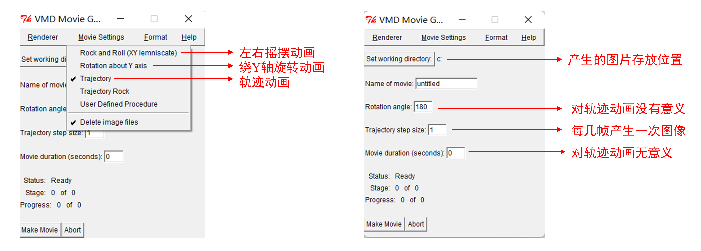

PicToGif的使用方法
本篇文章主要用于说明PicToGif的使用方法。
PicToGif的简要介绍
PicToGif是用于将多幅图片按照特定的顺序组合成GIF文件的工具。PicToGif采用Python进行编写，核心功能的实现用到了imageio库。PicToGif源代码以及Windows下的可执行文件可在其主页上进行下载。
PicToGif的使用方法
Step 1:使用VMD生成多张轨迹图片
首先将轨迹文件导入VMD中，随后使用Extensions-Visualization-Movie Maker插件生成多张轨迹图片。该插件中相关参数的解释如下图。

设置完成后，点击Make Movie按钮即可将生成的图片保存到指定的文件夹中(在这里，建议新建一个文件夹用于保存VMD生成的图片)。
Step 2:将多张轨迹图片利用PicToGif组合成GIF文件
启动PicToGif的方法有两种。第一种方法是直接将上一步获得的文件夹拉至PicToGif.exe上松手，随后PicToGif将对该文件夹进行读取。第二种方法是双击PicToGif.exe，然后输入存储图片的文件夹路径，随后PicToGif也会对该文件夹读取。当PicToGif载入文件夹完成后，窗口中将会出现以下的内容。
0 Extracted file type: bmp
1 Sort order: ascending
2 Frame rate: 5
3 Number of cycles: 0
4 Start to convert
q Exit the program
- 选项
0：规定需要组合成GIF文件的图片后缀名(例如png，jpg等)。对于使用VMD生成的轨迹图片，此项不需要修改。 - 选项
1：规定图片排列成GIF文件的顺序(是以图片名升序排序还是降序排列)。对于使用VMD生成的轨迹图片，此项不需要修改。 - 选项
2：规定GIF中每秒播放的图片数量，默认值为5。这一项需要根据实际情况进行灵活调整。 - 选项
3：规定GIF的播放次数。若为0则为无限循环播放。这一项需要根据实际需要调整。 - 选项
4：开始对图片进行合并，并将合并得到的GIF文件保存到与轨迹图片同级目录下。合并后得到的GIF文件文件名为convert.gif。 - 选项
q：退出程序。